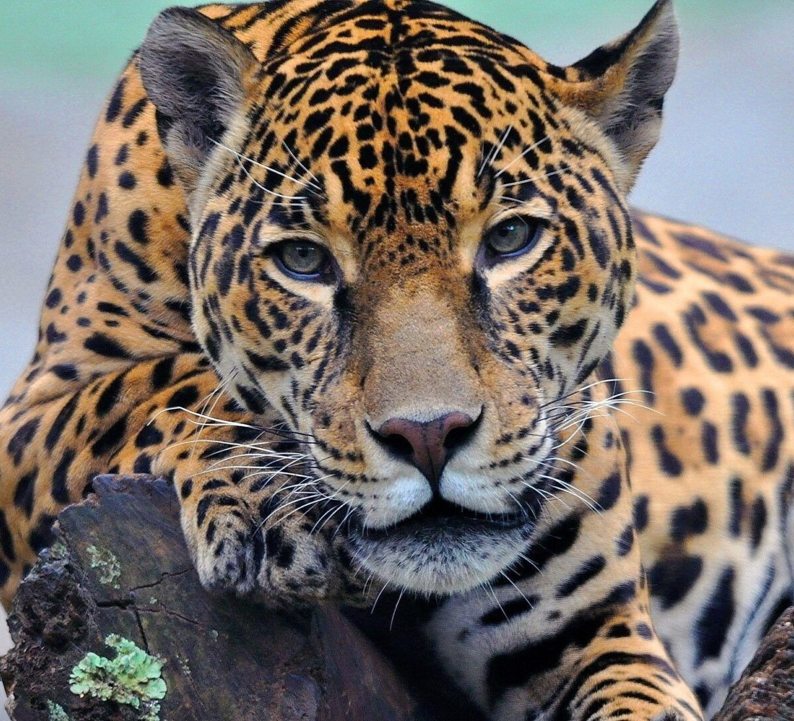

Refúgio Felino


Sobre Nós
Bem-vindo ao Refúgio Felino! Somos uma família apaixonada por esses magníficos habitantes das florestas brasileiras, comprometidos em preservar e proteger cada felino que chama o Brasil de lar.
Animais

Contato
Telefone
(11) 3456-7890
refugiofelino@gmail.com
Área de Serviço
Atendemos todo o Brasil
Endereço
Boa Vista, Manaus - AM